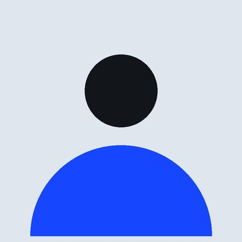
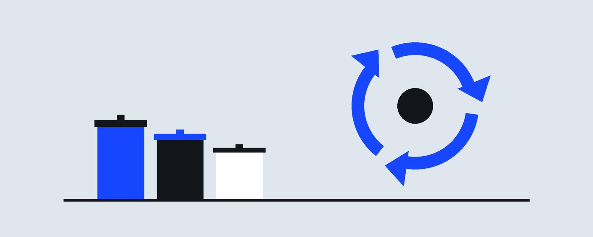
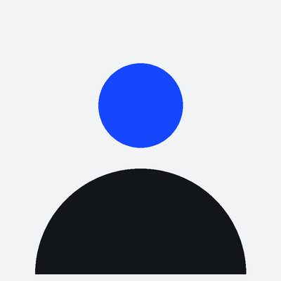
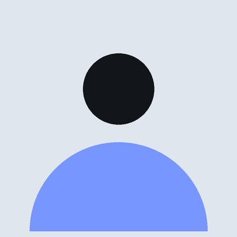

Marina Duarte
Presidente
O Ciclo Aberto organiza coleta seletiva, oficinas de reuso e educação ambiental na zona sul de São Paulo desde 2014, junto com cooperativas de catadores.

Somos uma organização sem fins lucrativos formada por moradores, catadores, educadores e engenheiros ambientais. Acreditamos que reciclar só funciona quando o bairro participa e quando quem trabalha com resíduos é valorizado.


Presidente

Coordenador de projetos

Gestora financeira e de transparência
Endereço: R. Martim Francisco, 655 - Vila Buarque, São Paulo - SP, 01226-000
Telefone: (11) 0000-0000
E-mail: contato@cicloaberto.exemplo.br
Atendimento: segunda a sexta, das 9h às 17h